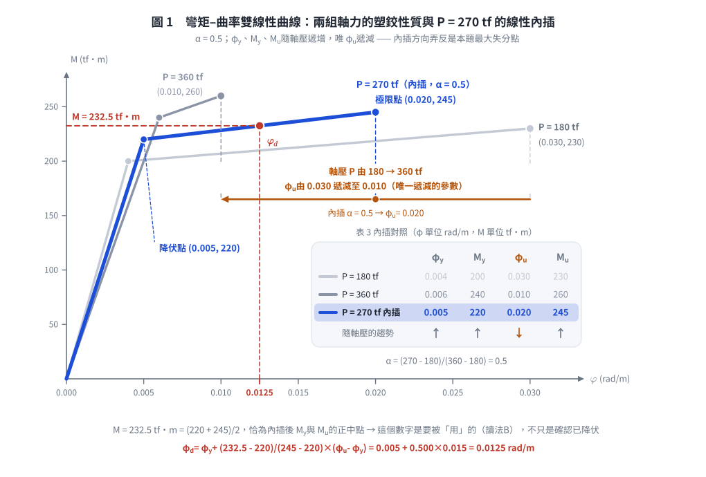
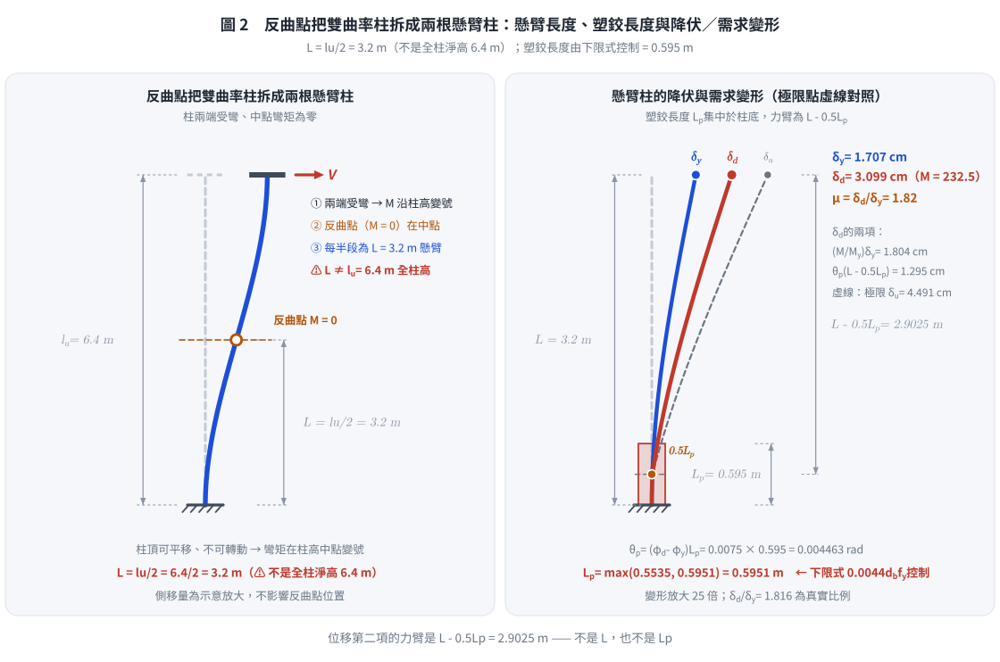
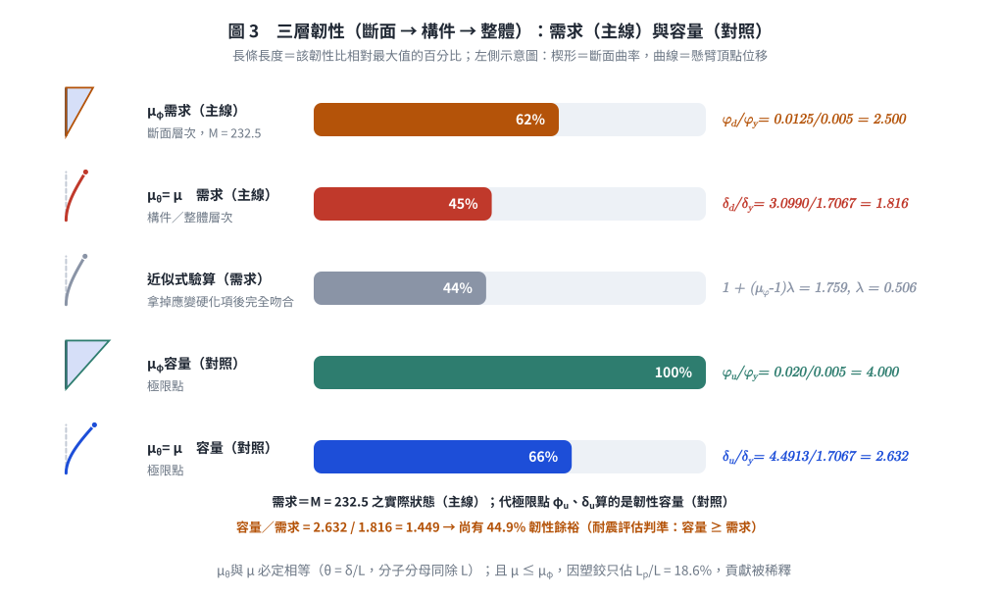

📄 題目正本：考卷原文・附圖・判讀清單（已確認）
RC-2022-4 題目正本
本檔只記錄考卷上寫了什麼、圖上畫了什麼，不含任何解法。解析見同資料夾
RC-2022-4.md。
判讀清單已經確認（凍結）；本檔原則上不再修改（改動須回考卷原圖並記 log）。
| 項目 | 內容 |
|---|---|
| 考卷 | raw/exams/RC-2022_鋼筋混凝土設計與預力.pdf 第 4 頁（頁次 4－4），第四題 |
| 考年 | 民國 111 年（2022） |
| 配分 | 25 分 |
| 附圖 | 無（本題只有公式與表 3，無附圖） |
| 判讀狀態 | 已確認（2026-11-15 使用者授權依 Claude 建議確認；轉錄 2026-11-15；PyMuPDF 110 dpi 全頁目視，附圖 400–450 dpi 局部放大；文字以 PDF 文字層核對（公式以影像為準）；盲讀後才比對既有解析） |
1. 考卷原文（逐字）
四、某鋼筋混凝土柱之斷面尺寸 80×80 cm、淨高度 6.4 m，混凝土強度 $f'_c$＝280 kgf/cm²、鋼筋降伏強度 $f_y$＝4200 kgf/cm²，縱向主筋使用 D32 鋼筋。已知該柱於軸壓力分別為 $P$＝180 tf 及 $P$＝360 tf 作用時，柱底彎矩塑鉸性質分別如表 3 所示，皆為雙線性曲線。該柱底今承受軸壓力 $P$＝270 tf，彎矩 $M$＝232.5 tf-m，假設其彎矩塑鉸性質可由表 3 數值作線性內插，且反曲點位於淨高度一半位置。請根據民國 109 年 12 月交通部頒「公路橋梁耐震評估與補強設計規範」所列公式如下，以撓曲變形為主，評估反曲點下方柱視作單曲率柱時之曲率韌性需求 $\mu_\phi$、轉角韌性需求 $\mu_\theta$，與位移韌性需求 $\mu$。（25 分）
$\delta_y=\dfrac{\phi_yL^2}{3}$，$\theta_y=\dfrac{\delta_y}{L}$
$\delta_u=\dfrac{M_u}{M_y}\delta_y+(\phi_u-\phi_y)L_P\times(L-0.5L_P)$，$\theta_u=\dfrac{\delta_u}{L}$
$L_P=0.08L+0.0022d_bf_y\ge0.0044d_bf_y$
表 3 彎矩塑鉸參數表（照錄）
| 軸力 $P$＝180 tf 曲率 $\phi$（rad/m） | 彎矩 $M$（tf-m） | 軸力 $P$＝360 tf 曲率 $\phi$（rad/m） | 彎矩 $M$（tf-m） | |
|---|---|---|---|---|
| 原點 | 0 | 0 | 0 | 0 |
| 降伏點 | 0.004 | 200 | 0.006 | 240 |
| 極限點 | 0.03 | 230 | 0.01 | 260 |
2. 考卷給的公式、附表與參數
- 題文數值：柱 80×80 cm、淨高 6.4 m；$f'_c$＝280、$f_y$＝4200 kgf/cm²；主筋 D32；柱底 $P$＝270 tf、$M$＝232.5 tf-m；反曲點在淨高一半。
- 公式與表 3：見 §1（照錄；公式中 $L_P$ 的單位考卷未註明）。
- 卷首表 1（CNS 竹節鋼筋）：D32 $d_b$＝3.22 cm、$A_b$＝8.143 cm²（其餘 D10–D29 略）；表 2 每層最大鋼筋數與梁寬關係（本題用不到）。
- 作答規範（卷首）：中國土木水利工程學會「混凝土工程設計規範與解說」（土木 401-100），未依規範作答，不予計分；本題另指定交通部「公路橋梁耐震評估與補強設計規範」（民國 109 年 12 月）的公式。
- 沒有給：$L_P$ 式中各量的單位、主筋根數與排列、柱頂邊界條件以外的資訊。
- 卷首注意事項：㈠可以使用電子計算器。㈡不必抄題，作答時請將試題題號及答案依照順序寫在試卷上，於本試題上作答者，不予計分。㈢本科目除專門名詞或數理公式外，應使用本國文字作答。
3. 附圖
無（本題無附圖；表 3 已於 §1 照錄）。
4. 判讀清單
「把握」標不確定者優先列；解讀類項目（題目用字的意思）另標「解讀」。標「依 Claude 建議確認」者，為使用者 2026-11-15 授權「要我確認的請依你建議」後定案。
| # | 項目 | 判讀 | 圖上／題文依據 | 把握 |
|---|---|---|---|---|
| 1 | 「韌性需求」的狀態 | 以柱底實際承受的 $M$＝232.5 tf-m 為需求狀態：在內插後的雙線性曲線上由 $M$ 反求需求曲率 $\phi_d$；公式中的 $M_u$、$\phi_u$ 代入此需求狀態的 $M$、$\phi_d$（不是極限點） | 題文「評估…韌性需求」並給定 $M$＝232.5；若用極限點，$M$＝232.5 在題中無作用 | 不確定（影響答案）；依 Claude 建議確認 |
| 2 | $L_P$ 單位 | 係數已含單位換算：$d_b$ 與 $L_P$ 同一長度單位、$f_y$ 以 kgf/cm² 代入（$d_b$ 用 cm 得 cm、用 m 得 m，數值一致）；$0.08L$ 與 $L_P$ 同單位 | 公式照錄；考卷 $f_y$ 以 kgf/cm² 給 | 確定（解讀）；依 Claude 建議確認 |
| 3 | $L$ | 反曲點以下柱長＝6.4/2＝3.2 m，視為單曲率（懸臂）柱 | 題文「反曲點位於淨高度一半位置」「反曲點下方柱視作單曲率柱」 | 確定 |
| 4 | 內插 | $P$＝270 tf 介於 180 與 360 中點：降伏點與極限點的 $\phi$、$M$ 各自線性內插 | 題文「可由表 3 數值作線性內插」 | 確定 |
| 5 | $d_b$ | D32 $d_b$＝3.22 cm（卷首表 1） | 表 1 | 確定 |
| 6 | 「以撓曲變形為主」 | 只計撓曲變形（不計剪力變形、鋼筋滑移） | 題文 | 確定（解讀） |
| 7 | 所求 | $\mu_\phi$、$\mu_\theta$、$\mu$ 三者 | 題文 | 確定 |
| 8 | 考卷沒有給 | 主筋根數與排列（本題用不到） | 全題 | 確定 |
轉錄：2026-11-15（RC-U3-3 批 2＋U1-3＋U2-3 題目正本推廣）
確認：2026-11-15 使用者授權依 Claude 建議確認（RC-U3-3 批 2＋U1-3＋U2-3 題目正本推廣，關卡一）
考題編號：RC-2022-4
主分類： RC-U3-3 韌性要求與耐震設計
副分類： RC-U1-2 RC 柱強度分析與設計
設計法： USD（耐震評估計算）
標籤： 曲率韌性 轉角韌性 位移韌性 彎矩塑鉸 線性內插 塑鉸長度Lp 公路橋梁耐震規範 單曲率柱 需求vs容量
1. 題目（考卷原文見題目正本）
考卷原文、公式／附表、附圖與判讀清單（已確認）見
RC-2022-4-problem.md。本節只列解題時最容易讀錯的地方與本解使用的記號；題意以題目正本為準。
常見誤讀
| 項目 | 正確判讀 | 常見誤讀 |
|---|---|---|
| 韌性需求狀態 | 以 $M$＝232.5 tf-m 的需求狀態為準：由內插曲線反求需求曲率 $\phi_d$，公式中 $M_u$、$\phi_u$ 代需求狀態值 $M$、$\phi_d$（判讀 #1） | 直接代表 3 極限點（本庫舊解主線；算出的是韌性容量） |
| $L$ | 反曲點以下 3.2 m，視為單曲率懸臂 | 取全淨高 6.4 m |
| $L_P$ 單位 | 係數已含換算：$f_y$ 以 kgf/cm² 代入，$d_b$ 與 $L_P$ 同單位 | $f_y$ 改用 MPa 再代入 |
| 內插 | $P$＝270 tf 為 180、360 的中點，四個參數各自線性內插（$\phi_u$ 隨軸壓遞減） | $\phi_u$ 內插方向弄反 |
| $d_b$ | D32 3.22 cm（卷首表 1） | — |
本解記號： $L$＝320 cm；$d_b$＝3.22 cm；$f_y$＝4200 kgf/cm²；$P$＝270 tf、$M$＝232.5 tf-m；內插降伏點與極限點見題目正本表 3；需求狀態以下標 $d$ 表示（$\phi_d$、$\delta_d$、$\theta_d$）。
2. 考題核心精神與出題者意圖 (Core Concepts & Examiner's Intent)
核心觀念： 依橋梁耐震規範的雙線性彎矩-曲率模型，評估 RC 柱在指定軸力與彎矩下的三種韌性需求比。
題意（題目正本判讀 #1 已確認）： 題幹問「韌性需求」並給定柱底實際彎矩 $M$＝232.5 tf·m（恰為內插後 $M_y$＝220 與 $M_u$＝245 的正中點）。
需求狀態即柱底承受 $M$＝232.5 時的狀態：在內插後的雙線性曲線上由 $M$ 反求 $\phi_d$，再把考卷公式中的 $M_u$、$\phi_u$ 換成 $M$、$\phi_d$。
直接代入極限點（$\phi_u$、$M_u$）算的是韌性容量，降為 §5 對照。
出題者意圖：
- 測驗線性內插的正確執行（$P = 270$ 在 180~360 之間）
- 由彎矩反求雙線性曲線上的需求曲率（$M$ 在降伏後段）
- 考驗 $L_p$ 公式的適用（混合單位、下限控制）
- 確認三個韌性需求的計算層次：曲率（斷面層次）→ 轉角（構件層次）→ 位移（整體層次）
3. 解題戰略地圖與陷阱分析 (Strategic Roadmap & Trap Analysis)
作戰計畫：
Step 1：確認懸臂長度 L = lu/2
Step 2：線性內插 P = 270 tf 的塑鉸參數
Step 3：由 M = 232.5 在內插曲線上反求需求曲率 φd
Step 4：計算 Lp（注意下限控制）
Step 5：計算 δy、θy
Step 6：計算需求位移 δd、θd（公式中 Mu、φu 換成 M、φd）
Step 7：計算三個韌性需求比
關鍵陷阱：
| # | 陷阱 | 應對策略 |
|---|---|---|
| ⚠1 | $L$ 是反曲點到柱底的距離 $= l_u/2$，不是全柱高 $l_u$ | $L = 6.4/2 = 3.2$ m |
| ⚠2 | 「需求」用極限點代入 → 算成容量 | 由 $M$＝232.5 反求 $\phi_d$ |
| ⚠3 | $L_p$ 公式的下限：$0.0044d_b f_y$ 可能控制 | 計算兩式後取 $\max$ |
| ⚠4 | $L_p$ 公式混合單位：$d_b$ 與 $L_p$ 同單位，$f_y$ 在 kgf/cm² | 係數已含換算，勿再改 MPa |
| ⚠5 | $\mu_\theta = \mu$（因 $\theta = \delta/L$） | 驗算：兩者應相等 |
3.5 變數層次分析 (Variable Hierarchy Analysis)
複習提示：第一次解題後，在每個卡住的知識點旁標記
⚠；第二次複習時只看有⚠的項目。
最終目標
依線性內插得 P = 270 tf 的塑鉸參數，由 M = 232.5 求需求曲率 φd，套入橋梁耐震規範公式，求 μφ = φd/φy、μθ = θd/θy、μ = δd/δy
本題關鍵公式（依計算順序）
$$\text{Step 1：線性內插（}\alpha = 0.5\text{）} \quad \boxed{\phi_y},\,\boxed{M_y},\,\boxed{\phi_u},\,\boxed{M_u} \text{ 由表 3 插值得出}$$
$$\text{Step 2：需求曲率} \quad \boxed{\phi_d} = \boxed{\phi_y} + \frac{M-\boxed{M_y}}{\boxed{M_u}-\boxed{M_y}}\left(\boxed{\phi_u}-\boxed{\phi_y}\right)$$
$$\text{Step 3：塑鉸長度} \quad L_p = \max\!\left(0.08L + 0.0022d_b f_y,\; 0.0044d_b f_y\right) \;\Rightarrow\; \boxed{L_p}$$
$$\text{Step 4：降伏位移} \quad \boxed{\delta_y} = \frac{\boxed{\phi_y} \cdot L^2}{3}, \quad \boxed{\theta_y} = \frac{\boxed{\delta_y}}{L}$$
$$\text{Step 5：需求位移} \quad \boxed{\delta_d} = \frac{M}{\boxed{M_y}}\boxed{\delta_y} + (\boxed{\phi_d}-\boxed{\phi_y})\cdot\boxed{L_p}\cdot(L-0.5\boxed{L_p}), \quad \boxed{\theta_d} = \frac{\boxed{\delta_d}}{L}$$
$$\text{Step 6：三種韌性需求} \quad \mu_\phi = \frac{\boxed{\phi_d}}{\boxed{\phi_y}}, \quad \mu_\theta = \frac{\boxed{\theta_d}}{\boxed{\theta_y}}, \quad \mu = \frac{\boxed{\delta_d}}{\boxed{\delta_y}}$$
L1：題目直接給定
| 符號 | 數值 | 說明 |
|---|---|---|
| $l_u$ | 6.4 m | 柱淨高 |
| $P$ | 270 tf | 軸壓力（題目給定，用於內插） |
| $M$ | 232.5 tf·m | 柱底彎矩（需求狀態） |
| $d_b$ | 3.22 cm = 0.0322 m | D32 主筋直徑 |
| $f_y$ | 4200 kgf/cm² | 主筋降伏強度 |
| 表 3 | 見題目正本 | 兩組軸力下的雙線性塑鉸參數 |
L2：需知識點推導
Step 1：線性內插
| 符號 | 公式／來源 | 卡關? |
|---|---|---|
| $\alpha$ | $(P-180)/(360-180) = 0.5$ | |
| $\phi_y$ | $0.004 + 0.5\times(0.006-0.004) = 0.005$ | |
| $M_y$ | $200 + 0.5\times(240-200) = 220$ | |
| $\phi_u$ | $0.030 + 0.5\times(0.010-0.030) = 0.020$ | |
| $M_u$ | $230 + 0.5\times(260-230) = 245$ |
Step 2：需求曲率
| 符號 | 公式／來源 | 卡關? |
|---|---|---|
| $\phi_d$ | $0.005 + \frac{232.5-220}{245-220}(0.020-0.005) = 0.0125$ rad/m |
Step 3：$L_p$ 與懸臂長
| 符號 | 公式／來源 | 卡關? |
|---|---|---|
| $L$ | $l_u/2 = 3.2$ m | |
| $L_p$（第一式） | $0.08L + 0.0022 d_b f_y = 0.5535$ m | |
| $L_p$（下限） | $0.0044 d_b f_y = 0.5951$ m | |
| $L_p$ | $\max$(兩式) $=0.595$ m |
Step 4–5：位移計算
| 符號 | 公式／來源 | 卡關? |
|---|---|---|
| $\delta_y$ | $\phi_y L^2 / 3$ | |
| $\theta_y$ | $\delta_y / L$ | |
| $\delta_d$ | $(M/M_y)\delta_y + (\phi_d-\phi_y)L_p(L-0.5L_p)$ | |
| $\theta_d$ | $\delta_d / L$ |
Step 6：韌性需求
| 符號 | 公式／來源 | 卡關? |
|---|---|---|
| $\mu_\phi$ | $\phi_d/\phi_y$ | |
| $\mu_\theta$ | $\theta_d/\theta_y = \delta_d/\delta_y = \mu$ | |
| $\mu$ | $\delta_d/\delta_y$ |
L3：深層知識（不懂就卡住）
| 知識點 | 說明 | 卡關? |
|---|---|---|
| 反曲點 → 懸臂柱分析 | 反曲點將雙曲率柱拆成兩根等長懸臂柱；塑鉸在柱端，分析長度 $L = l_u/2$ | |
| 需求 vs 容量 | 需求＝實際受力狀態（$M$＝232.5）的變形比；容量＝極限點的變形比；耐震評估判準為容量 ≥ 需求 | |
| 三種韌性的物理層次 | $\mu_\phi$ 描述斷面；$\mu_\theta$ 描述構件轉角；$\mu$ 描述整體位移；$\mu_\theta = \mu \le \mu_\phi$ | |
| $\delta$ 公式拆解 | 第一項 $(M/M_y)\delta_y$：硬化段等效彈性位移；第二項：塑鉸轉角 $\theta_p = (\phi_d-\phi_y)L_p$ 乘力臂 $(L-0.5L_p)$ | |
| 為何 $\mu_\theta = \mu$？ | $\theta = \delta/L$，分子分母同比例 → $\mu_\theta = \mu$ | |
| $L_p$ 混合單位慣例 | $0.0022d_b\times f_y(\text{kgf/cm}^2)$：$d_b$ 用 m 得 m；係數已吸收單位換算 |
4. 步驟化詳細計算過程 (Step-by-Step Detailed Calculation)
Step 1：確認懸臂長度
反曲點位於淨高一半：
$$L = \frac{l_u}{2} = \frac{6.4}{2} = \mathbf{3.2 \text{ m}}$$
Step 2：線性內插塑鉸參數（$P = 270$ tf）
$$\alpha = \frac{270 - 180}{360 - 180} = \frac{90}{180} = 0.5$$
| 參數 | $P=180$ tf | $P=360$ tf | 內插（$P=270$ tf） |
|---|---|---|---|
| $\phi_y$（rad/m） | 0.004 | 0.006 | $0.004 + 0.5\times0.002 = \mathbf{0.005}$ |
| $M_y$（tf·m） | 200 | 240 | $200 + 0.5\times40 = \mathbf{220}$ |
| $\phi_u$（rad/m） | 0.030 | 0.010 | $0.030 + 0.5\times(-0.020) = \mathbf{0.020}$ |
| $M_u$（tf·m） | 230 | 260 | $230 + 0.5\times30 = \mathbf{245}$ |
Step 3：需求曲率 $\phi_d$
$M = 232.5$ tf·m 介於 $M_y = 220$ 與 $M_u = 245$ 之間，位於雙線性曲線的降伏後段：
$$\phi_d = \phi_y + \frac{M - M_y}{M_u - M_y}(\phi_u - \phi_y) = 0.005 + \frac{232.5-220}{245-220}\times(0.020-0.005) = 0.005 + 0.5\times0.015 = \mathbf{0.0125 \text{ rad/m}}$$

圖 1 表 3 兩組軸力與內插後的三條雙線性 $M$–$\phi$ 折線畫在同一張，並在內插曲線上標出 $M = 232.5$ 對應的需求曲率 $\phi_d$。攔的是 $\phi_u$ 內插方向弄反（四個參數只有它隨軸壓遞減），以及把 $M = 232.5$ 只當成「確認已降伏」而直接用極限點。
Step 4：塑鉸長度 $L_p$
$$d_b = 3.22 \text{ cm} = 0.0322 \text{ m}, \quad f_y = 4200 \text{ kgf/cm}^2$$
第一式：
$$0.08L + 0.0022\,d_b\,f_y = 0.08\times3.2 + 0.0022\times0.0322\times4200 = 0.256 + 0.2975 = 0.5535 \text{ m}$$
下限：
$$0.0044\,d_b\,f_y = 0.0044\times0.0322\times4200 = 0.5951 \text{ m}$$
$$\boxed{L_p = \max(0.5535,\ 0.5951) = \mathbf{0.595 \text{ m}}} \quad \text{（下限控制）}$$
Step 5：降伏位移與轉角
$$\delta_y = \frac{\phi_y L^2}{3} = \frac{0.005 \times 3.2^2}{3} = \frac{0.05120}{3} = \mathbf{0.01707 \text{ m}}$$
$$\theta_y = \frac{\delta_y}{L} = \frac{0.01707}{3.2} = \mathbf{0.005333 \text{ rad}}$$
Step 6：需求位移與轉角
考卷公式中的 $M_u$、$\phi_u$ 代入需求狀態的 $M$＝232.5、$\phi_d$＝0.0125：
$$\frac{M}{M_y} = \frac{232.5}{220} = 1.0568,\qquad L - 0.5L_p = 3.2 - 0.2975 = 2.9025 \text{ m}$$
$$\delta_d = \frac{M}{M_y}\delta_y + (\phi_d - \phi_y)\cdot L_p\cdot(L - 0.5L_p)$$
$$= 1.0568\times0.017067 + (0.0125 - 0.005)\times0.595\times2.9025 = 0.018036 + 0.012954 = \mathbf{0.030990 \text{ m}}$$
$$\theta_d = \frac{\delta_d}{L} = \frac{0.030990}{3.2} = \mathbf{0.009684 \text{ rad}}$$

圖 2 左格畫全柱雙曲率變形與中點反曲點，右格畫由此切出的懸臂柱及其降伏／需求變形（極限點虛線對照）、柱底塑鉸長度與力臂。攔的是 $L$ 誤用全柱淨高、第二項力臂誤用 $L$ 或 $L_p$、$L_p$ 忘記取下限，以及把極限點當需求。
Step 7：三種韌性需求
$$\boxed{\mu_\phi = \frac{\phi_d}{\phi_y} = \frac{0.0125}{0.005} = \mathbf{2.50}}$$
$$\boxed{\mu_\theta = \frac{\theta_d}{\theta_y} = \frac{0.009684}{0.005333} = \mathbf{1.82}}$$
$$\boxed{\mu = \frac{\delta_d}{\delta_y} = \frac{0.030990}{0.017067} = \mathbf{1.82}}$$
驗算： $\mu_\theta = (\delta_d/L)/(\delta_y/L) = \delta_d/\delta_y = \mu$ ✓（兩者必定相等）
彙整表
| 項目 | 計算值 | 韌性需求 |
|---|---|---|
| 降伏曲率 $\phi_y$ | 0.005 rad/m | — |
| 需求曲率 $\phi_d$ | 0.0125 rad/m | $\mu_\phi = \mathbf{2.50}$ |
| 降伏位移 $\delta_y$ | 1.707 cm | — |
| 需求位移 $\delta_d$ | 3.099 cm | $\mu = \mathbf{1.82}$ |
| 降伏轉角 $\theta_y$ | 0.005333 rad | — |
| 需求轉角 $\theta_d$ | 0.009684 rad | $\mu_\theta = \mathbf{1.82}$ |
5. 關鍵爭議點與進階探討 (Critical Issues & Advanced Discussion)
爭議點 1：$M = 232.5$ tf·m 的角色——需求（主線）與容量（對照）
關鍵觀察： $M = 232.5 = \dfrac{220 + 245}{2}$，恰好是內插後 $M_y$ 與 $M_u$ 的正中點，是要被「用」的，不只是拿來確認已降伏。
| 需求（本解主線） | 容量（對照：直接代極限點，本庫舊解主線） | |
|---|---|---|
| 依據 | 「需求」＝在實際承受的 $M = 232.5$ 之狀態評估（題目正本判讀 #1） | 照原卷公式下標 $u$ 代入極限點 |
| 曲率 | $\phi_d = \mathbf{0.0125}$ rad/m | $\phi_u = 0.020$ rad/m |
| $\mu_\phi$ | $0.0125/0.005 = \mathbf{2.50}$ | $0.020/0.005 = 4.00$ |
| 位移 | $\delta_d = \mathbf{3.099}$ cm | $\delta_u = 1.1136\times1.707 + 0.015\times0.595\times2.9025 = 4.491$ cm |
| $\mu_\theta = \mu$ | $3.099/1.707 = \mathbf{1.82}$ | $4.491/1.707 = 2.63$ |
| 名稱 | 嚴格意義的韌性需求 | 其實是韌性容量 |

圖 3 需求（主線）與容量（對照）下的斷面／構件／整體三層韌性比與近似式驗算並列。攔的是算出 $\mu > \mu_\phi$（不可能），或 $\mu_\theta$ 與 $\mu$ 得到不同值——它們必定相等。
考場建議： 主答需求（$\mu_\phi = 2.50$、$\mu_\theta = \mu = 1.82$），再補一句「若照公式下標以極限點計，得容量 $\mu_\phi = 4.0$、$\mu_\theta = \mu = 2.63$；容量／需求 $= 2.632/1.816 = 1.449$，尚有 44.9% 韌性餘裕」。
爭議點 2：$L_p$ 公式的單位系統
原式為 Priestley & Park (1987)：$L_p = 0.08L + 0.022\,d_b f_{ye} \ge 0.044\,d_b f_{ye}$（$L,d_b$：m；$f_{ye}$：MPa）。
換成 kgf/cm²：$0.022/10.197 = 0.002157 \approx \mathbf{0.0022}$、$0.044/10.197 = 0.004315 \approx \mathbf{0.0044}$ ✓
與規範印出的係數吻合——代入時 $f_y$ 直接用 4200 kgf/cm²，不要再換算成 MPa。
本題 $0.08L = 0.256$ m 只佔第一式的 46%，下限式 $0.0044d_bf_y = 0.595$ m 控制（大 7.5%）。$L$ 越短、主筋越粗、$f_y$ 越高，下限越容易控制。
進階：三層韌性的物理意義與近似式交叉驗算
$$\mu_\phi = 2.50 > \mu_\theta = \mu = 1.82$$
- $\mu_\phi$ 只看斷面塑鉸點的曲率比（局部）。
- $\mu$ 看的是整體頂點位移（全局），塑鉸區只是 $L_p = 0.595$ m 的一段，其貢獻被稀釋於整根 $L = 3.2$ m 的柱中。
- 兩者關係：$\mu \approx 1 + (\mu_\phi - 1)\,\lambda$，其中 $\lambda = 3\dfrac{L_p}{L}\!\left(1 - 0.5\dfrac{L_p}{L}\right)$。
驗算：$\lambda = 3\times0.1859\times0.9070 = 0.506$，$\mu \approx 1 + (2.50-1)\times0.506 = \mathbf{1.759}$
比主線的 1.816 略小——差額來自公式第一項的應變硬化 $\dfrac{M}{M_y}\delta_y$（$M/M_y = 1.057$）。
把硬化拿掉：$\delta_d = 0.017067 + 0.012954 = 0.030021$ m，$\mu = 1.759$ ✓ 與近似式吻合（容量對照同理：無硬化 $\mu$＝2.518＝$1+3\times0.506$）。
爭議點 3：規範版本
- 本題指定的「公路橋梁耐震評估與補強設計規範」於民國 109 年底定稿、110 年 3 月 23 日由交通部頒布（交技(110)字第 1105003536 號令）；截至 2026 年 8 月未再改版，即為現行規範，答案不受規範版本影響。
- 與建築物系統（建築物混凝土結構設計規範 2023、耐震規範 111）的分工：
| 公路橋梁耐震（本題） | 建築物（混凝土規範 2023／耐震規範 111） | |
|---|---|---|
| 韌性的表達 | 分三層：$\mu_\phi$（斷面）→ $\mu_\theta$（構件）→ $\mu_\Delta$（整體） | 以結構系統韌性容量 $R$ 與 $F_u$ 折減地震力 |
| 塑鉸長度 | 明訂 $L_p = 0.08L + 0.0022d_bf_y \ge 0.0044d_bf_y$ | 未訂 $L_p$；以 $\ell_o$（圍束區長度）處理 |
| 評估方式 | 容量／需求比對（Pushover 導向） | 強度設計（$\phi S_n \ge U$）＋ 韌性細節規定 |
| 圍束需求 | 依曲率韌性需求反算 $\rho_s$ | $A_{sh}$ 依表 18.7.5.4 |
考場提醒： 看到「$\mu_\phi$、$\mu_\theta$、$\mu_\Delta$」「$L_p$」「反曲點」就是橋梁系統；看到「$A_{sh}$、$s_o$、$\ell_o$、$1.25f_y$、$M_{pr}$」就是建築系統。
圖解補繪：2026-09-07（向量圖 3 張，腳本 figs/gen_RC-2022-4.py，可重跑；腳本檔尾對 §4 公佈值做 assert）
修正日期：2026-11-15（§1 改為指向題目正本；舊 §1 重述改寫為常見誤讀與本解記號；本行非答案勘誤）
修正日期：2026-11-15（非勘誤）分類標頭依 wiki/queries/分類稽核-RC-2026-11-15.md 調整：設計法改 USD；解析內容與答案未改
修正日期：2026-11-15（依題目正本判讀 #1 勘誤：韌性需求改以 $M$＝232.5 tf·m 的需求狀態為主線（$\phi_d$＝0.0125 rad/m）：$\mu_\phi$ 4.0 → 2.50、$\mu_\theta$＝$\mu$ 2.63 → 1.82；極限點結果（容量）降為 §5 對照；舊 §6 規範對照併入 §5（本題所引橋梁規範即現行版）；圖 2、圖 3 改以需求為主線重跑；改依現行台灣規範（建築物混凝土結構設計規範 2023／耐震規範 111）之相關敘述；驗證：.work/u33b2c/check_errata_U3_3_B2.py 重算 MISMATCHES: 0）